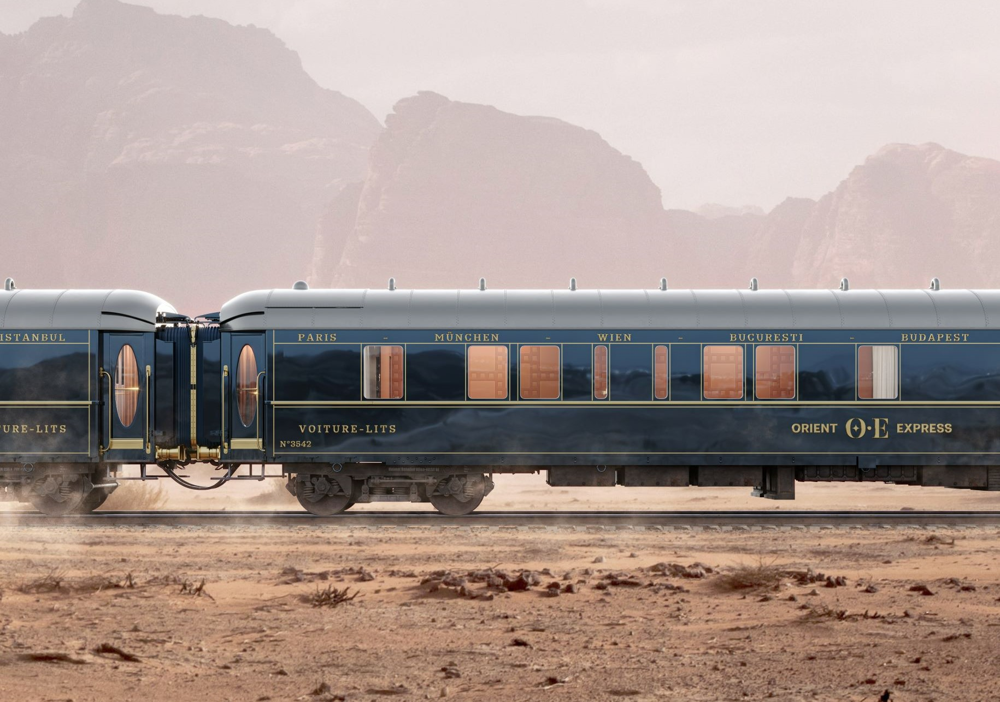

Orient Express
The Orient Express, established in 1883, was synonymous with opulence and adventure, offering a luxurious passage from Paris to Istanbul. It transported royalty, diplomats, and notable figures across the continent,giving passengers an unparalleled experience of elegance and sophistication on wheels. With intricately designed interiors, fine dining, and exceptional service, the Orient Express was more than just a train;it was a symbol of romance and the Golden Age of travel. Today, it remains iconic, representing an era when train journeys were as much about the experience as the destination.
Characteristics
- Length: 250 meters
- Speed: 80-120 km/h
- Year of Release: 1883
- Seating Capacity: 150 passengers
- Route: Paris to Instanbul